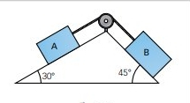

ro-Dos cuerpos A de 4kg y B de 5kg, están unidos
por una cuerda inextensible y de masa despreciable. Si el ángulo
de A es 30o y el de B 45o y cuelgan tal y
como aparece en la figura. El coeficiente de rozamiento vale
0,2. Calcula la aceleración con la que se mueve el sistema

AVANZA